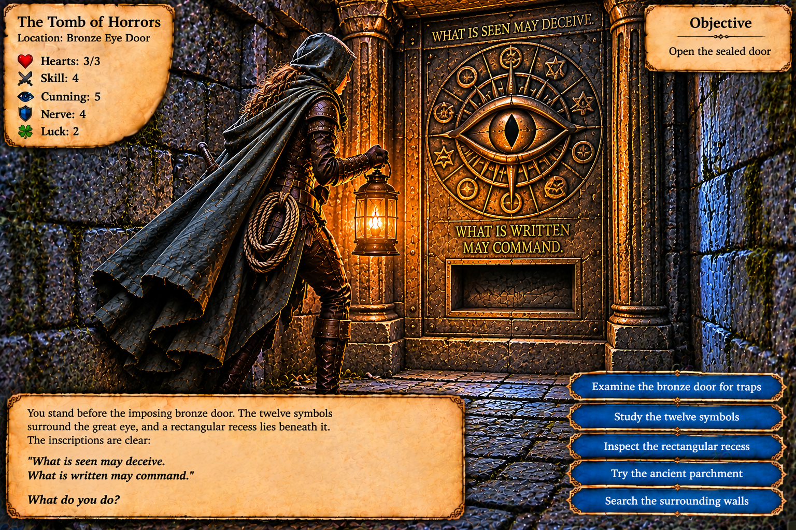
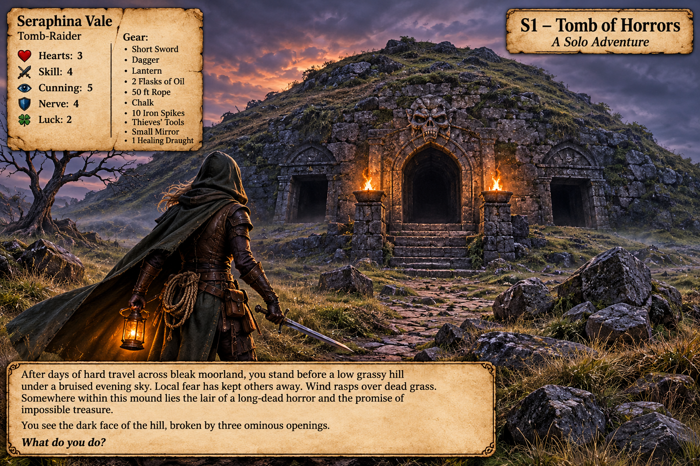

Room 01: Bronze Eye Door

Seraphina Vale · Solo adventure campaign library
Current location: Bronze Eye DoorOur permanent explored-area map grows only when a new section is discovered. Previously explored areas stay unchanged.
The original floor-plan PNG is not yet uploaded. It will appear here once added to images/explored-floor-plan.png.
Schematic is a navigation aid, not a replacement for the original illustrated map.
Each scene illustration will be added as a separate numbered file. Image filenames stay stable, allowing updates without changing earlier pictures.


“The first mouth lies. The second mouth hungers. The third mouth waits.”
“Follow not the loud mouth. Seek where the dead hill sighs.”
Silver serpent key recovered. Red glass eye left untouched.
Skull · Eye · Wind — visible only in a mirror.
Seven-second air pulses. Key opened hidden right passage and remains trapped in shaft grille.
Pressure plate below three ceiling slots. Turning the wall ring clockwise raised the collapsed ledge, shuttered the slots and closed the distant eye.
“What is seen may deceive. What is written may command.”
Twelve bronze symbols include skulls, eyes and three wind symbols.
Rising Breath → Silent Breath → Falling Breath. The Silent Breath symbol bears “HUSH”.
Connected to Silent Breath via bronze tube and shutter. “Let the words be heard before the breath is stilled.” No items inserted yet.
Hearts: 3/3 · Skill: 4 · Cunning: 5 · Nerve: 4 · Luck: 2/2
Short sword, dagger, lantern, two oil flasks, 50 ft rope, chalk, ten iron spikes, thieves' tools, small mirror, one healing draught, ancient parchment.
Serpent key: left in ventilation shaft lock.
Position: At the Bronze Eye Door, unharmed.